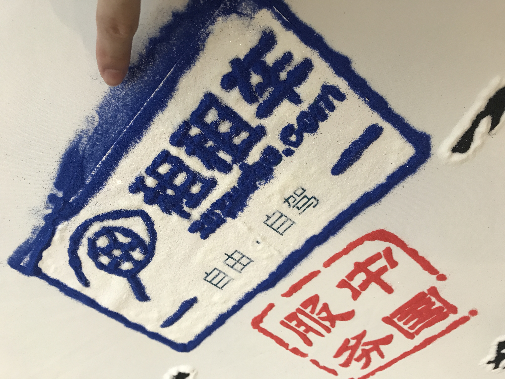

上一篇文已经是一个月前的，还是改不了懒的习惯
习惯性对最近做一些总结，关于面试，关于工作上，关于最近学习的东西。
关于面试
记得从四月尾就一段时间去面一次，现在已经确定继续留在租租车。顺路捣鼓一些东西，考考专升本。
自荔枝之后面了四家
- cvte
- 阿里外包
- YY
- 车主无忧
cvte
cvte 我都忘了有投他公司简历，一天晚上看书，突然就来了个电话说是xxxx的xxx，来进行电话面试。
然后就稀里糊涂聊了半个多小时，之后就说等hr电话。
hr电话聊了下加班情况，企业文化，福利等东西。
其实之前就一直听说cvte很封闭，又很传统，加班贼疯狂，企业文化又很那啥，所以打心里不会去那里
所以hr面的时候，也没有怎么回答，但是有一点是cvte居然是没有薪资保密的，所以我就顺路问了hr的薪资看是不是真的像他说的一样 薪资允许讨论。结果估计因为这个得罪了hr= =没有过hr面
阿里外包
阿里外包其实是最意外的一家
是武汉一家公司联系上的，联系之后想着去试一下阿里的面试到底是怎样的 所以就答应了
hr非常的好，面试前再三叮嘱，也把面试官看完简历的反馈告诉了我
还让同事提前面我一轮，面完说 没什么问题
面试当天聊了下项目经验还有基础知识和一些问题的排查思路
本以为答的挺不错的，和面试官也聊得很愉快。后面面试官说去找老大来面，让我骚等片刻
过段时间后说老大在开会，让我回去等通知…现在想起才知道原来老大在开会是一个拒绝人的套路 图样图森破
去阿里面想起了一年前去面uc，那时候也面得很开心，后面得知是应聘外包岗就没怎么想继续下去…
但是阿里的面试官给我的感觉没有像一些小公司的人一样，给人的感觉是很亲切的。和我说如果想进某个大公司，最简单的方法就是参与该公司的开源项目，这是收获最大的一个点。
虽然过了不会去，但是总体来说还是很意外。
车主无忧
车主无忧这个就比较尴尬了，是在公司同一栋…面试大概的感觉就是挺容易的，面试官问的问题都是针对项目经验，所以基本没有造假划水就没什么问题。
面三四轮，技术面面前端Leader，技术二面面部门负责人，然后就是cto面，面完hr和我说不能给我期望薪资
三年最多只能给xxk…说一开始以为我是有三年半经验，所以可以给四年的薪资
后面接了offer考虑下完全不值得跳就放弃
但是车主无忧有个题外话，和hr聊天聊很久，hr说 之前租租车有高级前端来面试给出的评价是很水，所以对我原本的不抱什么希望。但是技术面给的评价是很不错，所以有点惊讶租租车内部的水平差异大。
YY UED
面YY是最近最开心，收获最大的一次面试。
UED当时面试的时候只有四个前端，我总共面了五轮？基本上就是部门轮着人来虐我= =
一面和leader聊聊天，说一些场景的解决方案
然后就是笔试题，做完之后就是面三面。
三面和部门一个技术大牛聊聊天，聊框架居多，一个vue的人 对react了解比我深很多，这是挺佩服的
他有个评分标准，大概就是想招vue 6分以上，以写写demo看看api为1分；能保证项目正常上线5分；熟悉整个框架结构原理，遇到问题能准确知道是在哪个环节出问题，对整个生命周期及运转很熟悉为6分；对整个vue生态都很了解，精准到每次迭代改动的源码部分，还有vuex等生态也很关注为10分。
大牛说我是面过的同等工作年限的中上水平，这句话让我开心了好久好久….哈哈哈哈
给出的评价是各方面都很均衡，没什么明确的缺点，但是这也意味着没有一个能拿出来讲的有深入研究的方向。
最后让我回去等通知
几天后hr打电话说过去面试，开心。
四面是部门另一个前端面试，聊了一些基础知识吧，还有一些场景和概念性的问题。
具体问什么忘了，只记得聊的也挺愉快的。面完之后是leader下来闲聊一下，问还有什么问题，没有就面hr了
hr面是在yy面试最累的一个，全程hr拿着小本本，边问边记。可能是前面和技术小伙伴聊得比较open，到hr这边突然变得谨慎了，所以面完hr之后 整个人都好累。也是很传统的问了以前的公司，为什么跳槽啊之类的。 有一些不一样的就是问我怎么保证有持续的产出和能保持高效长期学习，因为UED是需要不断的探索前瞻技术的，还有就是问我有没有blog，多少人订阅…emmmm 我说我的博客没人订阅没人看，自己写着玩 🤦
过了几天后hr打电话聊offer，总体来说比现在的高了不少，算是很满意的一个offer了。
本来铁了心要过去那边浪，毕竟部门的同事基本都见了一遍 哈哈哈哈，然后offer又比较心水。
后面因为个人原因选择继续留在租租车，但是如果在以后有机会，还是会优先考虑yy的。
关于工作
项目拆包
既然选择留在租租车，肯定就不能像之前半年划划水就过去
最近工作上主要负责的是，想着把部门的项目做个拆包
原本小项目慢慢迭代成很大的项目，一次打包要花半个小时….加上现在目录的问题，每天过来都要打一个全量包。
所以现在的计划是，对项目模块进行拆包，一个模块独立成一个项目，有自己的node_models，但是共用一个git。
这个其实从半年前就有人提出来，但是太难搞了 所以一直没人去推
首先要考虑的是部门不可能停掉日常迭代，来等你拆包。而且你的需求也不会因为这个技术需求而减少，所以要在平时做需求的间隙做这件事情。
尽可能把路径替换，文件迁移等做成脚本去跑，不然做不下去。
而且拆包之后，要考虑后端的模板路径问题还有部署的问题，加上一些前端 pwa,amp的构建考虑
真是个大工程…
最近的成果是本地能跑起来，但是还缺一个 本地服务，加上还没有和后端，部署那块沟通。
任重道远
下半年的指标
下半年，老大给定的技术指标是React和Webpack两项
其实原本给的是Http和浏览器内核，但是我觉得说现在我去了解那两块没什么大的收获。
加上在yy面试之后，面试官一直给的评价是没有一个很深入的点，所以就选了React去做深入的方向。
React探索之余了解Webpack和 PWA部分
关于webpack
前几天有个需求是项目上用到的cookie都要记录到某个文档里面，一开始想着写一个webpack插件去做这件事情。 项目的webpack是3.x，官方的文档全都升级到4.x，一开始有点蛋疼，也没有一个比较适合入门的demo，要不就是太简单，要不就是很复杂的。
后面终于大概跑了起来，但是跑起来之后，发现和预想的不一致。为什么呢？
文档需要记录的是 key value description, 举个例子
cookie.set(‘name’, ‘jsonz’, ‘用户名’);
我的方案是在webpack编译的时候拿到babel转义和代码压缩优化之前的内容，因为项目上涉及到cookie的操作都会用一个 cookie-js 的类库，所以可以利用这个做为切入点。
大概的思路是： webpack生命周期里面去拿到源文件，然后用一个语法分析树，解析成AST，再根据类型去筛选出 cookie-js 函数调用传入的参数
本来觉得天衣无缝，但是理想很天真，实际项目上五花八门，比如
1 | import Cookie from 'Cookie-js'; |
所以其实如果真的要用脚本记录，只能在运行环境下记录，所以放弃这个方案….
关于捣鼓
小程序
前段时间是自己捣鼓了一个小程序，用来给每天做计划的。大概长这样
技术栈:
前端: 用的是美团的 mpvue，暂时发现其实和写vue很多不一样，因为有很多可能是小程序的局限问题，也可能是转换问题，n多莫名其妙的bug而且还无法正面干。
后端:
Node: 做主要服务端语言，用的阿里Egg.js框架
MySQL: 为什么选择MySQL而不是前端(node)惯用的mongodb呢？ 主要原因有两个，一个是mongo体验过了；一个是现在业界其实mySql还是占绝大多数，而且比较成熟，想体验一波关系型数据库。
服务器：
Nginx: 没什么好说的，对于一个没有折腾过的人来说还是挺开心的
Centos
看起来是挺简单的，但是对于个人学习来说是个挺好的项目。特别是一个完全没有真正捣鼓过后端，服务端的人来说，真的很happy，比单纯写前端要考虑的事情多很多。
但是最近因为工作的事情，暂时搁置一边，目前还是 0.0.1 可以用最简单的计划的功能。后面拆包完成之后就回来加功能再发布
图片转字符
前几天有高中好朋友在群里发一个视频，问我们说真的是可以这样的吗？
原视频是死肥宅都知道的极乐净土，然后我觉得很有趣，就问公司群这种怎么实现，大概是图片转字符串
于是就去搜了一下 canvas 转字符串，再找了下怎么把视频转图片 🤦没错，我就是大自然的搬运工
最后实现出来大概是这样子
大概的实现思路是 通过video和canvas把视频逐帧丢到canvas里面，再用canvas读出每个像素的灰度去匹配一个字符串，然后用这些字符串重写一个canvas出来。
后面有时间再把这个整理成一篇文章出来
关于学习
最近是有点懒惰了，专升本一直看离散数学，原本预计7月份要看完顺路做一套题，现在怕是要延迟一个星期最少。
看完还有万恶的网络原理和数据库原理…
加油💪
最后附上周末团建的图
